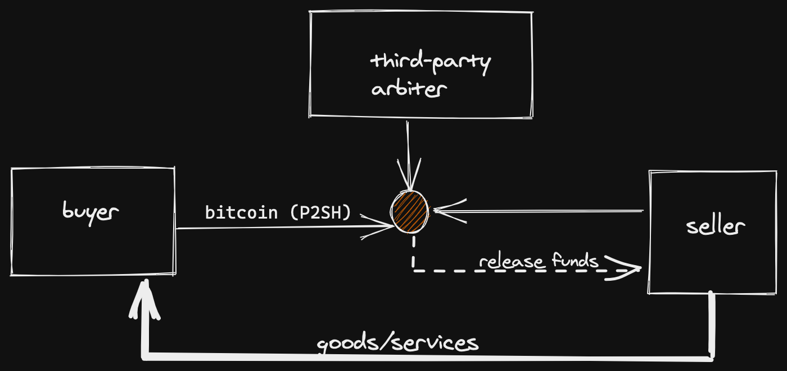

Cryptocurrency
Skeleton
The what?
- key features and how they’re achieved. Cryptocurrency: Key Features#
- Blockchain# as fundamental data structure
Devil’s advocate and reality check
- why would cryptocurrencies work (or not)? - from an economic perspective
- what’s the current adoption of bitcoin (not as an investment, but as a currency with which one does daily transactions).
- can bitcoin and altcoins co-exist in the future? How many altcoins can exist?
- what issues have the bitcoin community faced so far? (forks etc.)
- is there a strong alternative to bitcoin that can replace it in future?
- what are the vulnerabilities of blockchain/bitcoin? (the resource should be someone invested in hacking blockchain and not bitcoin.org)
- policy (this) and financial systems (this) role around bitcoins/blockchain
- can bitcoin be blocked by government?
- social implications of bitcoin
Possibilities
what other applications are possible on blockchain?
- what markets are coming up right now.
- what markets can blockchain possibly disrupt?
what are the avenues via which I can profit off blockchain?
- any upcoming industry i can foray into?
Ethereum#
Bitcoin as a state transition system
Apply(S, TX) -> S'Here S contains all Unspent transaction outputs (UTXOs). Each of these UTXO having a denomination and an owner (essentially a cryptographic public key).TX can contain multiple transations, with each transation having multiple inputs, each containing a reference to an existing UTXO and a cryptographic signature produced by the private key of the owner (thereby establishing ownership of the input UTXO). The transaction can have multiple outputs, which produce multiple UTXO (which is added to the new state).
The state transition function APPLY(S,TX) -> S' can be defined roughly as follows:
- For each input in TX:
- If the referenced UTXO is not in S, return an error.
- If the provided signature does not match the owner of the UTXO, return an error.
- If the sum of the denominations of all input UTXO is less than the sum of the denominations of all output UTXO, return an error.
- Return S’ with all input UTXO removed and all output UTXO added.
UTXOs in bitcoin
- unspent transaction outputs
- transactions that have been an input to an address but not yet output to another.
- equivalent to balance, but a different way of representing.
- we can include a transaction fees - whoever mines a block with this transaction can claim it!
Ledger types
Account based ledger
- may have to go back to the beginning of blockchain to validate transactions (efficiency issues)
- significant space savings as nodes don’t need to download all transactions.
transaction based ledger (like bitcoin)
- only need to track back to a coinbase (generation of bitcoins by mining) => allows us to do simple payment verification (SPV) nodes.
- accounts are just a collection of UTXOs.
- join payments are possible (multiple inputs)
Escrow transactions

- a MULTISIG transaction (BIP-11)
- m-of-n type: if m parties agree, the funds are transferred.
- allows people to transact a little more trustlessly
Digital Assets
Colored coins: by carefully tracking the origin of bitcoins, it’s possible to “color” it so as to distinguish it from the rest. These colored bitcoins can then represent stocks/bonds, alternate currencies, smart contracts.
the question colored coins asked was: is it possible to use bitcoin technology for other applications as well? - “provably fair gambling systems” like SatoshiDice, transperancy in business and NGOs etc.
- A local community might wish to create a community currency, using the Bitcoin infrastructure to securely store funds.
- A company may wish to create a corporate currency, such as Air Miles rewards points, or even plain coupons.
- An issuer might wish to release a coin to represent deposits, allowing people to trade, for example, “Bitstamp-USD coins” or some gold storage company’s “gold coins”.
ERC-721 is the first standard to create NFTs on ethereum blockchain. ERC-1155 is the standard to create semi-fungible assets using which one can create a commodity class - there can be x number of particular digital commodity, each fungible among themselves.
Non-fungible Tokens
- It’s a digital certificate of ownership and authenticity that says you are the owner of a unique piece of digital asset like GIF or digital art.
- It very much maps to collectibles in real life. Open Sea is an NFT marketplace. So is Rarible which allows one to convert their digital art to NFTs.
questions
what really is the energy consumption of bitcoin (or in general, blockchain) network?
- does mining vs validation have different energy requirements? [start here]
what happens when a bitcoin wallet is lost? Can someone lose a lot of bitcoins and those would be out of circulation forever? What does this always decreasing property of bitcoin means for its stability?
how much time does it take for a transaction to be verified? How far into the future can it be refuted?
how merkel trees are used in bitcoins?
devil’s advocate:
- what are the arguments for bitcoin failing
- will bitcoing economy ever emerge? What will happen if it doesn’t?
- how exactly is bitcoin not prone to inflation?
some research around the genuine uses of blockchain vs the hype.
are there less energy intensive ways of achieving decentralised consensus?
volatility in price: the idea to control volatility is to adjust the supply when the demand goes up or down. In bitcoin, when people are hoarding it up, its value is solely expressed as a function of demand. Ether is a bit more flexible. Stablecoins like Dai have solved this problem.
for trading; https://www.binance.com/
crypto20 - an index fund for top 20 best performing cryptocurrencies fucking invest in ether! It’s going to be big which meetup or conferences covers new tech? (to follow) what are the advantages or disadvantages of building NFT on ethereum vs polkadot etc. sell some of your photographs as NFTs - https://academy.binance.com/en/articles/how-to-make-your-own-nfts dogecoin see if you can profit from Filecoin ethereum book - Mastering ethereum next job in blockchain domain (+ rust)?? blockchain development courses and OSS host blog on IPFS will i lose money due to rounding off in wazir? Ethereum 2 - how does ETH translate to this? Is there a chance of hard fork here? bunch of resources for crypto - https://drive.google.com/folderview?id=1v5cq2OmAOZ5RWv1YU3PyxPAvXiWewFkB
proof of work vs proof of stake uniswap
ideas:
- converting ebooks into a mobi - these can then be sold like physical ebooks…only the owners can unlock.
blockchain development by microsoft edureka learn solidity using space doggos how to become a blockchain developer building an NFT path to become a blockchain developer BAT polkadot wiki parity tech jobs